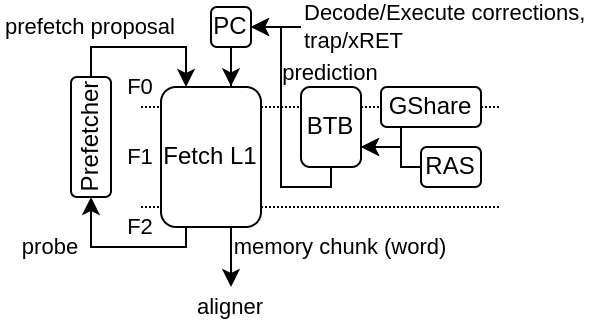

Fetch
The goal of the fetch pipeline is to provide the CPU with a stream of words in which the instructions to execute are presents. So more precisely, the fetch pipeline doesn’t realy have the notion of instruction, but instead, just provide memory aligned chunks of memory block (ex 64 bits). Those chunks of memory (word) will later be handled by the “AlignerPlugin” to extract the instruction to be executed (and also handle the decompression in the case of RVC).
Here is an example of fetch architecture with an instruction cache, branch predictor aswell as a prefetcher.
A few plugins operate in the fetch stage :
FetchPipelinePlugin
PcPlugin
FetchCachelessPlugin
FetchL1Plugin
BtbPlugin
GSharePlugin
HistoryPlugin
FetchPipelinePlugin
Provide the pipeline framework for all the fetch related hardware. It use the native spinal.lib.misc.pipeline API without any restriction.
PcPlugin
Will :
implement the fetch program counter register
inject the program counter in the first fetch stage
allow other plugin to create “jump” interface allowing to override the PC value
Jump interfaces will impact the PC value injected in the fetch stage in a combinatorial manner to reduce latency.
FetchCachelessPlugin
Will :
Generate a fetch memory bus
Connect that memory bus to the fetch pipeline with a response buffer
Allow out of order memory bus responses (for maximal compatibility)
Always generate aligned memory accesses
Note that in order to get goo performance on FPGA, you may want to set it with the following config in order to relax timings :
forkAt = 1
joinAt = 2
FetchL1Plugin
Will :
Implement a L1 fetch cache (non-blocking)
Generate a fetch memory bus for the SoC interconnect
Check for the presence of a fetch.PrefetcherPlugin to bind it to the L1
PrefetcherNextLinePlugin
Currently, there is one instruction L1 prefetcher implementation (PrefetchNextLinePlugin).
It is a very simple implementation :
On L1 access miss, it trigger the prefetching of the next cache line
On L1 access hit, if the cache line accessed is the same than the last prefetch, is trigger the prefetching of the next cache line
In short it can only prefetch one cache block ahead and assume that if there was a cache miss on a block, then the following blocks are likely worth prefetching as well.
Note, for the best results, the FetchL1Plugin need to have 2 hardware refill slots instead of 1 (default).
The prefetcher can be turned off by setting the CSR 0x7FF bit 0.
BtbPlugin
This plugin implement most of the branch prediction logic. See more in the Branch prediction chapter
HistoryPlugin
Will :
implement the branch history register
inject the branch history in the first fetch stage
allow other plugin to create interface to override the branch history value (on branch prediction / execution)
branch history interfaces will impact the branch history value injected in the fetch stage in a combinatorial manner to reduce latency.